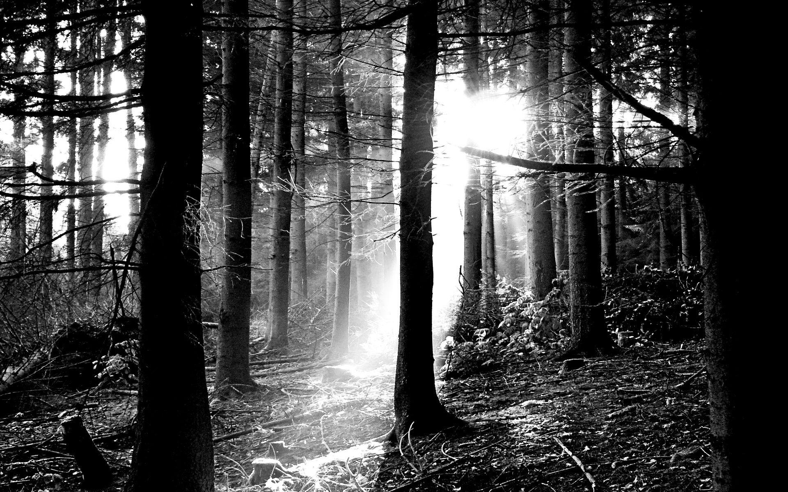
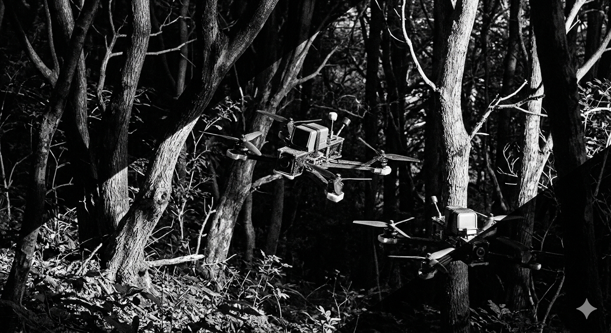
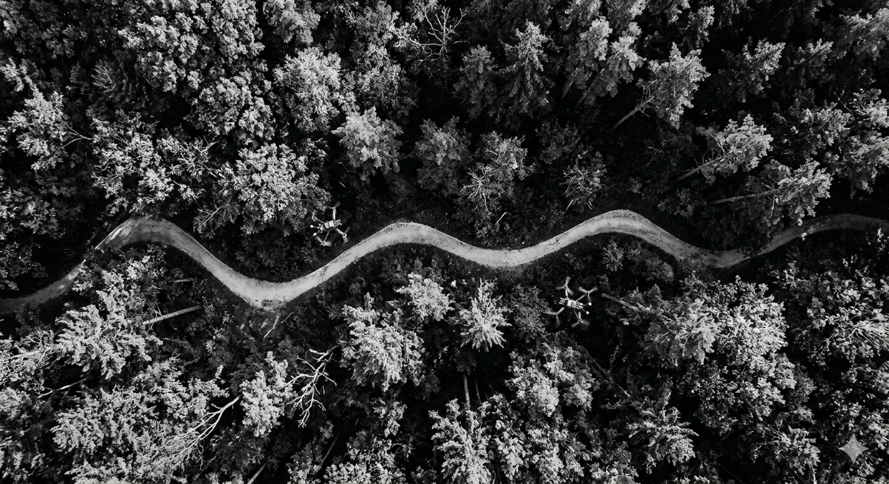

Argus
Panoptes
Multi-drone autonomous search and rescue - built for the environments that matter
Argus Panoptes is a research project with the goal of developing fully autonomous multi-UAV systems capable of operating in GPS-denied, visually complex environments. Designed from the ground up for real-world search and rescue scenarios such as dense forest, rugged terrain, disaster zones; where human-operated systems are too slow, too few, or too costly to deploy at scale.
Built to save lives
Search and rescue operations in wilderness environments are constrained by response time, terrain access, and the limits of human endurance. Existing drone solutions still depend heavily on manual piloting or require extensive infrastructure. Argus Panoptes exists to close that gap.
The system aims to integrates autonomous flight planning, real-time perception via computer vision, and coordinated multi-agent search coverage; all designed to operate without GPS, without constant human oversight, and without the luxury of a controlled environment.